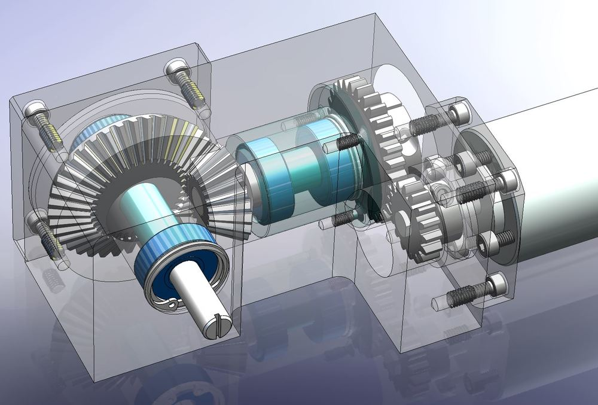
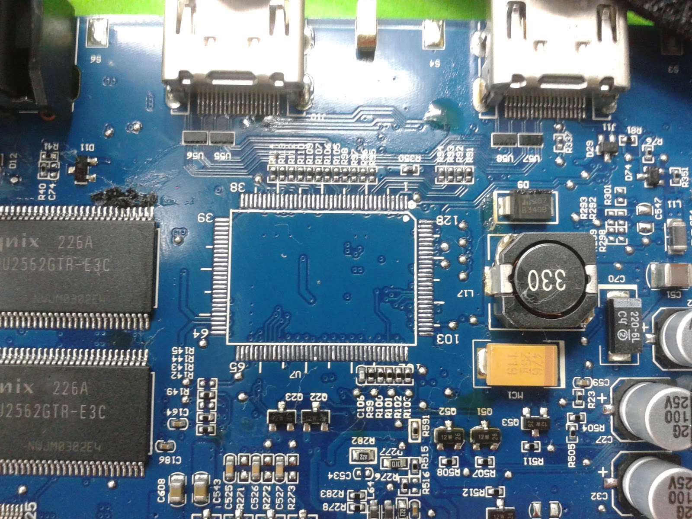
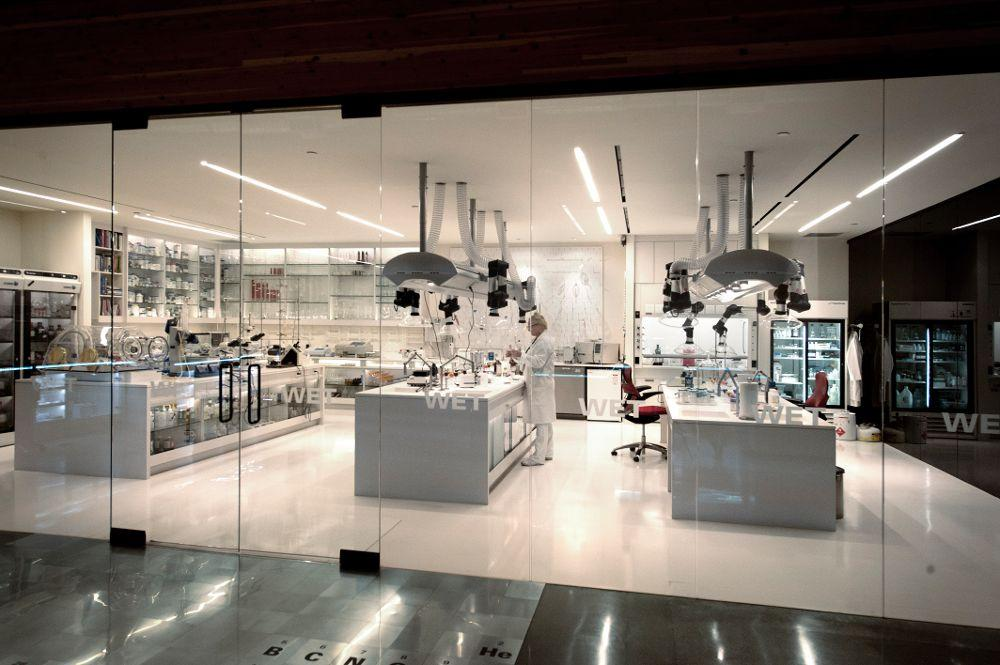

About Us
Welcome to WatLock. On our team we have four major subteams: Mechanical, Electrical, Research and Business.
Mechanical Team
The mechanical team is responsible for the design of all subsystems and components of the airlock. This includes all of the necessary systems to support life on Mars such as depressurization, sealing, and structural support systems
as well as unique functionalities such as a modular structure to allow for easier transportation. We
work hand-in-hand with the electrical and research teams, who provide support for our projects to ensure
our designs are feasible and low cost. Members on the mechanical team perform a large amount of hand
drawing and then proceed to complete designs with simulations, modelling, and calculations using SolidWorks.

Electrical Team

The electrical team plays a vital role into the design of almost every part of the airlock. We focus on many “mission critical”
systems such as life support and pressure control. Our work centers on the computing system of our airlock
and the autonomy of almost all systems. Members of the electrical team spend a great deal of their time
with microcontrollers, circuit design software and communication protocols. This work in combination
with that of the mechanical and research teams allow us to build complex systems within the airlock that
ensure astronauts are safe and able to focus on other tasks.
Research Team
The research team is responsible for designing innovative solutions to address the prominent issues of space settlement.
Projects the research tackles includes generating an air supply to the airlock, creating a flexible and
strong fabric that will protect against dust storms and radiation, and producing energy in a sustainable
way. The team does a lot of lab testing and prototyping to assist the mechanical and electrical team
with their projects which are then combined into the final design of the airlock.

Business Team
The business team addresses the team’s financial concerns and helps the team in reaching its goals. Without adequate funding,
building an airlock for a mars colony would just be our dream. The team is responsible for maintaining
the website, marketing the team throughout the University, and making pivotal project management decisions
that will help the team.